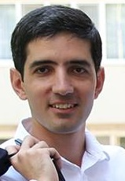

|

Nationalité : Arménienne, Française
Situation familiale :
Marié, 2 enfants
EXPERIENCE PROFESSIONNELLE
| 2011 - |
Professeur à l'ENSAE, FRANCE |
| 2010 - 2012 |
Professeur d'ENPC, FRANCE |
| 2008 - 2011 |
Directeur de recherche, IMAGINE, Ecole des Ponts ParisTech,
FRANCE |
| 2007 - 2008 |
Professeur chargé de cours à temps partiel, Ecole Polytechnique,
FRANCE |
| 2005 - 2006 |
Professeur invité (6 mois) à l'Université de Tokyo, JAPON |
| 2003 - 2008 |
Maître de conférences, Université Paris VI,
FRANCE |
| 2002 - 2003 |
Postdoc, Université Humboldt de Berlin, ALLEMAGNE |
| 1999 - 2002 |
Moniteur, Université du Maine, Le Mans, FRANCE |
| 2001 - 2004 |
Chercheur, Institut de Mathématiques, Erevan, ARMENIE |
PARCOURS UNIVERSITAIRE
| Nov. 2007 |
Habilitation à diriger des recherches en Statistique Mathématique
à l'Univ. Paris 6
|
| Déc. 2001 |
Thèse de doctorat en Statistique Mathématique
à l'Univ. du Maine, dirigée par Yury KUTOYANTS
|
| Juin 1999 |
DEA Processus Stochastiques, Univ. Paris VI, FRANCE |
| Juin 1998 |
MAITRISE de Mathématiques, Univ. du Maine, FRANCE |
| Juin 1997 |
Licence de Mathématiques, Univ. de Erevan, ARMENIE |
RESPONSABILITES PEDAGOGIQUES ET SCIENTIFIQUES
| 2010-2012 |
Associate Editor de Electronic Journal of Statistics |
| 2012- |
Associate Editor de
Journal of Stat. Planning and Inference |
| 2013- |
Associate Editor de Journal of Japan Stat. Society |
| 2014- |
Associate Editor de Stat Inference Stoch Process |
| 2012- |
Responsable de la séquence de mathématiques appliquées |
|
en 1ère et 2ème années de l'ENSAE |
2012- |
Correspondant ENSAE du Master MVA |
2014- |
Responsable de la voie "Data Scietist" en 3e année de l'ENSAE |
2014- |
Co-porteur du "Center for Data Science" à l'Université Paris-Saclay |
DISTINCTIONS
| 2013 |
"Best reviewer award" à la conférence NIPS |
| 2013 |
"Notable paper award" à la conférence AI-STATS |
| 1999 - 2002 |
Bourse de doctorat de la région “Pays de la Loire" |
| 1997 - 1999 |
Bourse du gouvernement français |
| 1994 |
Médaille de bronze au 35ème Olympiade
Internationale de Math. (HongKong) |
| 1994 |
Vainqueur du Tournois International des Villes (Beloretsk, Russie) |
| 1994 |
Diplôme de 1er degré lors de
l’Olympiade de mathématique en Arménie |
LANGUES
ANGLAIS courant
FRANCAIS courant
RUSSE courant
ALLEMAND scolaire
ARMENIEN langue maternelle
|